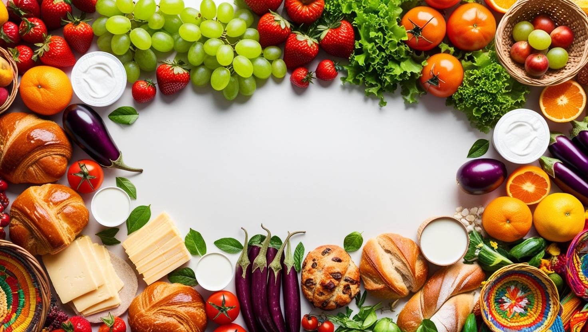
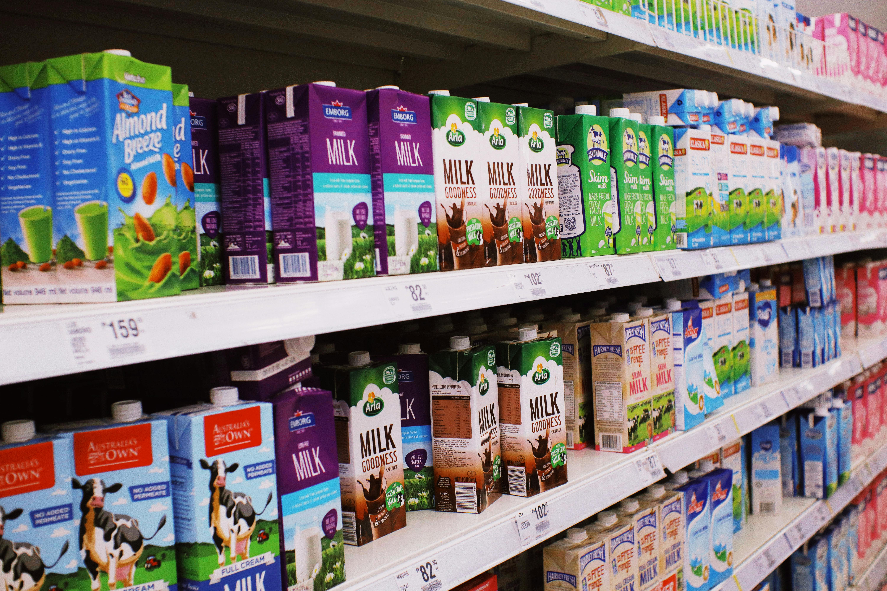
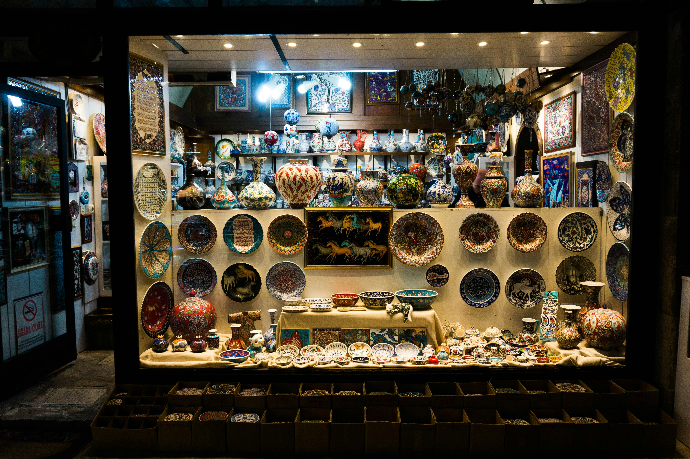

FRESH VEGETABLES

FRESH, FARM -TO -TABLE
UrbanFood is an innovative online marketplace that connects urban farmers, local producers, and artisans with consumers seeking fresh, high-quality, and locally sourced products. Our platform offers a diverse range of goods, including fresh fruits, vegetables, dairy products, baked items, and handmade crafts.
At UrbanFood, we aim to support small-scale farmers and local businesses by providing them with a digital space to showcase and sell their products directly to customers. By bridging the gap between producers and consumers, we promote sustainable agriculture, reduce food miles, and encourage a healthier lifestyle.

